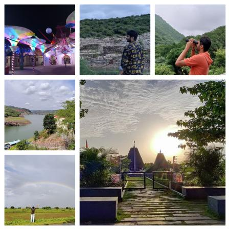

Year in Review 2021
It was not easy to pen down a review of the year 2021, like I had done for 2020 and 2019.
To sum up — 2021, for me, was a year of fresh beginnings, strenuous hikes, graduation, innovating, mentoring, learning new technologies, and exploring new ideas for side projects! It was also a year of building my network and turning new colleagues into friends ;-)
After several years of schooling, stepping into professional life with a fresh mind was a unique experience, but unfortunately it was virtual for me. As I look back at what I’ve accomplished this year, I can not express my feelings of joy. There are too many to list, but here is a list of some key highlights I want to share:

January – March
- Wrapped up Organizing the outreachy 21 program at Wikimedia.
- Developed my personal website: goapvasanth.me.
- Released v0.4 of VideoCutTool, check release notes at https://lists.wikimedia.org/pipermail/wikimedia-l/2021-February/096273.html
- Joined SAP Labs as an Associate Software Developer.
- Completed my final semester examinations!!!
- Took mock interviews for my juniors and gave constructive feedback with tips.
- Got a chance to explore IoT, played a bit with Arduino for Home Automation and wrote a blog on “Taste a cup of tea playing with Arduino” https://blogs.sap.com/2021/03/10/taste-a-cup-of-tea-playing-with-arduino/
April – June
- Enjoyed attending the Wikimedia Hackathon (virtually) and made some major updates to improve the look and feel of VideoCutTool along with my friend Abdul from Australia.
- A half week trip to Kerala, visited the Wonderla amusement park with friends in Kochi. Few joyous days in those hard times!
- Organized Google Summer of Code 2021 and Outreachy round 22 as an org admin with Wikimedia and hosted an Interns welcome party!
- Developed d-shop Inventory Management Application in SAP CAP (Cloud Application Programming) model and Node.js to make the process of lending items easy for d-shop users in Bangalore campus.
- Organized a Virtual Meetup with my classmates and had lots of fun reminiscing all the 4 years of college.
- Organized SAP iXp PowerHour talks and leadership connect sessions on various topics in a team.
- Spent many evenings collaborating with the team, brainstorming ideas, doing background research, taking experts advice and finally built a prototype Forex Forecaster which helps finance managers in organizations to improve company’s profitability - as a part of the SAP Innovator Challenge.
- Published a paper titled “Flick - Indigenous short video application” and submitted it to the ICCCNT 2021 conference.
- Graduated from college in the middle of a Friday. The fact that there was no graduation ceremony was a heartbreaking moment!
- Won the CSR Impact Hackathon organized by SAP partnering with GiftAbled organization by creating “SLara App - Indian Sign Language Reader Application” at SAP Labs India in a team.
July – September
- Completed my Internship at SAP Labs India as an Associate Software Developer where I learnt and explored SAP CAP, Node.js and SAP cloud BTP.
- Presented my paper at the ICCCNT 2021 Conference organized by IIT - Kharagpur.
- Started my full time employment as an Associate DevOps Engineer at SuccessFactors (SAP Labs India).
- Learned basics of DevOps technologies - Jenkins, Docker and building CI/CD pipelines.
- Had a good time with my family and relatives on a road trip to Nalamma forest and Srisailam.
- Created a website for my father’s new business “Vasanth Granites”.
October – December
- Keeping eldery people in mind, I built “WhatsApp Karo” app for easy messaging on WhatsApp without storing contacts!
- Won d-shop 2021 Maker Award - Innovate Category for the project - “dshop Inventory App”.
- Hiked 12km on foot from Alipiri to Tirumala along with a couple best buddies.
- Spent some nights learning Vue.js and built a couple of sample applications.
- For a long time, playing on snowy mountains was on my to-do list. I’m trying to make it happen by the end of this year! Planned to visit Shimla, Dharamshala, Manali and Amritsar along with my close buddies.
From college life to professional life, the transition was so smooth and thrilling. This year also marks one of the best years for me. I’ve tried to explore to my capacity, and had a lot of learning and fun with all my buddies. I am looking forward to what 2022 has in store for me. Merry Christmas and a Happy New Year 2022! May all your desires and dreams be fulfilled in the new year ☃️ !!:)